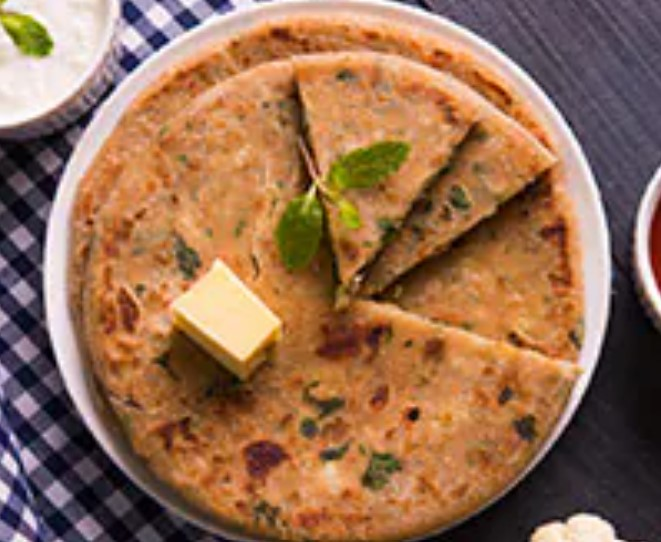
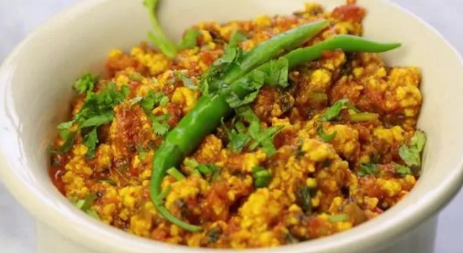
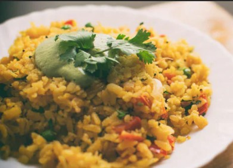

Green Moong Cutlet
- Soak the green moong dal (mung beans) overnight or for 5-6 hours.
- Drain the water and coarsely grind the moong to form a thick paste.
- Wash the poha once under running water and drain. Keep aside.
- Roast the besan on low flame until it turns light brown and emits aroma.
- In a large bowl, mix the green moong paste, poha, besan, onion, chillies, ginger and coriander.
- Next, add the masala powders mentioned above. Combine all the ingredients well. Taste to adjust salt.
- Form circular shapes (like patties or tikkis) of the mixture and pan-fry them on both sides on medium flame. Serve the cutlets hot with green chutney and/ or ketchup.

Panner Paratha
- Take whole wheat flour or atta in a bowl. Pour a small quantity of water and knead. Keep adding water as desired and knead smooth, soft dough. Let it rest for 20 minutes.
- Prepare the stuffing by grating paneer into small particles. Add finely chopped green chillies, coriander, onion, and spices. Mix everything well and keep aside.
- Take a small portion of the dough and roll it out roughly. Place a spoonful of the paneer filling in the centre and seal it from all sides. Flatten and roll out again. Use dry flour as required during the process. Make as many parathas as you need with this process.
- Once you get a half-inch thick paratha, heat the tawa. Transfer the paratha onto the tawa and let it cook on one side. Meanwhile, apply ghee or oil on the other side.
- Flip it and cook on the other side. Press gently with a spatula so that it roasts properly. Apply some more ghee on the top side before flipping again.
- Once the paratha is cooked properly on both sides and turns brown, take it off the flame. Serve with dahi, chutney or pickle of choice!

Soya Chana Dal Bhurji
- Soak Chana dal for at least half an hour. (If you want, you can also cook the dal first with 3 whistles, it will take less time to cook while making Bhurji.)
- Now heat oil in a pan, first add dry red chillies and finely chopped onions and fry till they become translucent.
- Add asafoetida and green chilies to it, fry soya granules with oil and onions so that its rawness goes away.
- Add finely chopped tomato and fry it for some time. Take out the water of dal and add it and mix it well.
- Add red chili, coriander powder, cumin powder, turmeric and as per taste and mix everything well while stirring continuously. If needed, you can add a little water.
- Cook Bhurji on low flame for some time and finish with some lemon juice. Pair it with roti or paratha.
Healthy Karela Tikki Recipe
- Wash the karela thoroughly and grate the outer part well. Transfer the grated karela to a mixer-grinder and form a coarse mixture. Add 1 tsp salt to this mixture and keep aside for 30 minutes.
- Finely chop the onions, chillies, ginger, garlic and coriander leaves. Keep them ready in a large mixing bowl.
- Later, squeeze out the water from the karela mixture and add the karela to the bowl.
- Add the paneer as well as the spice masalas listed above. Mix the ingredients and then add ajwain seeds and besan. Combine well and taste to adjust salt.
- Break off small pieces of the mixture and flatten them to make round patties/ tikkis. Pan-fry them on medium flame until golden brown. Serve karela tikkis hot with green chutney.

Corn Poha
- Boil the corns and keep aside.
- Wash poha and drain the water
- Heat oil in pan, add mustard seeds. When they start to splutter, add curry leaves. Saute for a minute.
- Saute onions, green chilli and ginger-garlic paste.
- Add tomatoes, salt, red chilli powder and turmeric powder. Saute till cooked.
- Add boiled corns and mix well. Add poha, drizzle some water. Mix well and serve with the garnishing of coriander leaves.